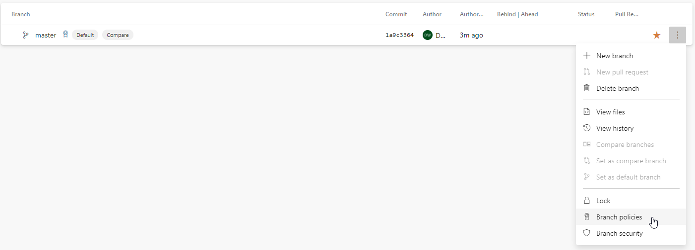
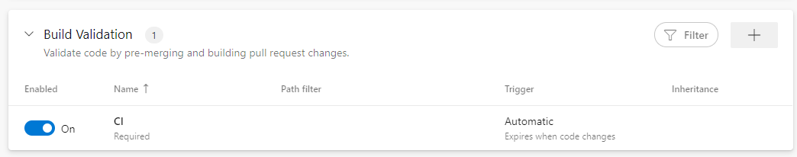

Azure Pipelines#
Work in progress…
Build validation
Check the Azure DevOps Repo documentation for more information.
For the build validation you can use the azure-pipelines.yml file in the root of this project or the same pipeline centrally hosted.
You can add a status check for test coverage as well and tweak it in azurepipelines-coverage.yml.
 